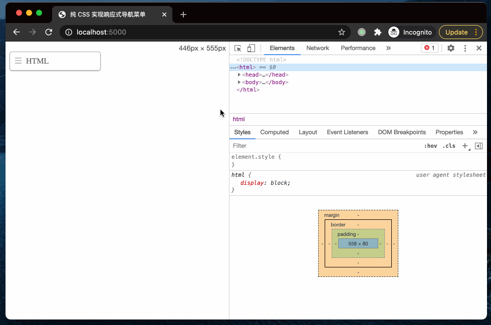

本文介绍如何使不使用 JavaScript 只使用 CSS 实现一个响应式导航菜单。菜单可以左对齐、右对齐或者居中。当用户鼠标移动到菜单上时，菜单就自动显示或隐藏，这样对用户也更加友好。菜单上也会有一个指示器，用来表示当前选中的菜单。该导航菜单兼容所有手机和桌面浏览器，甚至 Internet Explorer。
目标 🔗
本文的目标是实现一个导航菜单，当屏幕变小时，导航菜单由列表自动变为下来菜单。具体效果如下：

Nav 标签 🔗
下面是导航菜单的 HTML 标签。当创建绝对定位（absolute）的下拉菜单的时候，nav 标签是必须的。稍后将详细解释。.current 这个类用来表示当前选中的菜单。
<nav class="nav">
<ul>
<li class="current"><a href="#">HTML</a></li>
<li><a href="#">CSS</a></li>
<li><a href="#">JavaScript</a></li>
<li><a href="#">Node.js</a></li>
<li><a href="#">Java</a></li>
</ul>
</nav>
CSS 🔗
导航菜单的 CSS （桌面视图）是非常直观的，所以我不会详细解释。注意下面 nav li 使用了 display:inline-block 代替了 float: left，来实现列表横向排列。然后通过对 ul 标签制定 text-align 属性，来使得菜单居中、居左或居右。其余CSS 都是一些装饰样式。
/* nav */
.nav {
position: relative;
margin: 20px 0;
}
.nav ul {
margin: 0;
padding: 0;
}
.nav li {
margin: 0 5px 10px 0;
padding: 0;
list-style: none;
display: inline-block;
}
.nav a {
padding: 3px 12px;
text-decoration: none;
color: #999;
line-height: 100%;
}
.nav a:hover {
color: #000;
}
.nav .current a {
background: #999;
color: #fff;
border-radius: 5px;
}
居中和居左对齐 🔗
如上面所说，可以通过改变 text-align 属性的值来改变菜单的对齐方式。
/* right nav */
.nav.right ul {
text-align: right;
}
/* center nav */
.nav.center ul {
text-align: center;
}
支持 IE 🔗
IE8 以及更老的版本不支持HTML5 的 <nav> 标签和媒体查询，可以通过引入 css3-mediaqueries-js (或 respond.js) 和 html5shiv 来支持。如果不想使用 html5shim.js，将 <nav> 标签替换为 <div> 标签就可以了。
<!--[if lt IE 9]>
<script src="http://css3-mediaqueries-js.googlecode.com/files/css3-mediaqueries.js"></script>
<script src="http://html5shim.googlecode.com/svn/trunk/html5.js"></script>
<![endif]-->
响应式 🔗
接下来就是比较有趣的一部分了：使用媒体查询使菜单能够自适应。
这里以 600px 作为断点，因为 nav 标签的定位是 relative，所以这里可以将 <ul> 菜单设置为 absolute，使其固定在 nav 的定部。然后通过 display:none 隐藏所有的 li 标签，使用 .current 这个类，将当前 li 显示为 block。
因前面将 nav 标签定位设置为了 postion，所以将 <ul> 标签定位设置为 absolute 之后它就会排列在 nav 的顶部。然后通过设置 display:none 隐藏所有的 li 标签。然后当鼠标移动到 nav 上时，就将所有 li 标签设置为 display:block，这样来显示所有的下拉选项。我在 .current 类所在的标签添加了一个小图标来标志当前选中到菜单。如果想要让菜单居中或居右，在 ul 上添加 .right 或者 .left 属性就可以了。具体可以查看最终的 demo。
@media screen and (max-width: 600px) {
.nav {
position: relative;
min-height: 40px;
}
.nav ul {
width: 180px;
padding: 5px 0;
position: absolute;
top: 0;
left: 0;
border: solid 1px #aaa;
background: #fff url(images/icon-menu.png) no-repeat 10px 11px;
border-radius: 5px;
box-shadow: 0 1px 2px rgba(0,0,0,.3);
}
.nav li {
display: none; /* hide all <li> items */
margin: 0;
}
.nav .current {
display: block; /* show only current <li> item */
}
.nav a {
display: block;
padding: 5px 5px 5px 32px;
text-align: left;
}
.nav .current a {
background: none;
color: #666;
}
/* on nav hover */
.nav ul:hover {
background-image: none;
}
.nav ul:hover li {
display: block;
margin: 0 0 5px;
}
.nav ul:hover .current {
background: url(images/icon-check.png) no-repeat 10px 7px;
}
/* right nav */
.nav.right ul {
left: auto;
right: 0;
}
/* center nav */
.nav.center ul {
left: 50%;
margin-left: -90px;
}
}
参考：